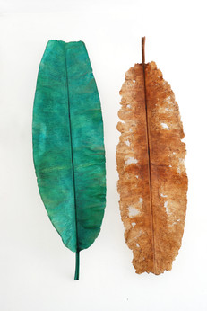
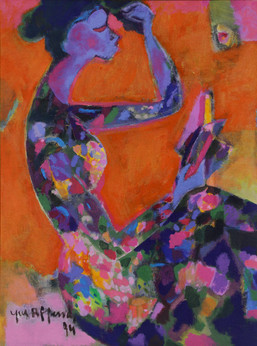

Profil SELASAR SUNARYO
Selasar Sunaryo Art Space (SSAS) adalah sebuah ruang dan organisasi nirlaba yang bertujuan mendukung pengembangan praktik dan pengkajian seni dan kebudayaan visual di Indonesia. Dididirikan pada tahun 1998 oleh Sunaryo, dengan arahan dan dukungan dari Yayasan Selasar Sunaryo, fokus utama SSAS adalah pada program dan kegiatan seni rupa kontemporer yang berorientasi pada edukasi publik, melalui pameran koleksi tetap, juga pameran-pameran tunggal atau bersama yang menampilkan karya-karya para seniman muda dan senior, dari Indonesia maupun mancanegara.
Sejarah SELASAR SUNARYO
Selasar Sunaryo Art Space (SSAS) berawal sebagai Selasar Seni Sunaryo — nama terdahulunya — yang merupakan perwujudan impian lama Sunaryo untuk berkontribusi dan mendukung pengembangan seni rupa di Indonesia. Selasar Seni Sunaryo secara resmi dibuka pada bulan September 1998 dengan pameran tunggal Sunaryo yang berjudul Titik Nadir (The Nadir Point, atau "titik terendah").
Pameran ini mencerminkan kepedulian seniman terhadap situasi sosial politik Indonesia saat itu, pada masa kekacauan dan keputusasaan bagi banyak orang Indonesia: rezim Soeharto jatuh bersama dengan krisis ekonomi-sosial dan banyak orang yang menderita kelaparan.
Alih-alih menampilkan karya-karyanya untuk pembukaan yang sudah lama ditunggu-tunggu ini, Sunaryo memilih untuk membungkus dan menyembunyikan karya-karya seninya dan bagian-bagian bangunan dengan kain hitam. Ia mencerminkan kreativitasnya yang terguncang, dan perasaannya bahwa ia telah mencapai titik terendahnya, yaitu Titik Nadir.
Dari peresmiannya pada tahun 1998 hingga berganti nama di tahun 2001 menjadi Selasar Sunaryo Art Space, organisasi ini telah mengalami beberapa tahapan renovasi dan dalam perkembangannya menambahkan beberapa fasilitas baru untuk mendukung pameran dan kegiatan seni rupa. Sekarang ini, SSAS telah menjadi salah satu pemain kunci dalam lanskap seni-budaya Indonesia.
Koleksi SELASAR SUNARYO
Koleksi di Selasar Sunaryo Art Space (SSAS) merupakan koleksi Yayasan Selasar Sunaryo yang sebagian besar adalah hibah atau pinjaman dari Sunaryo, pendiri dan direktur SSAS. Sebagian lainnya adalah hibah dari seniman yang pernah berpameran di SSAS atau yang memiliki hubungan baik dan mendukung misi SSAS.
Sebagai sebuah ruang seni-budaya dengan orientasi nirlaba, SSAS melalui program-programnya, selalu mengupayakan tampilan yang memiliki nilai dari sisi pencapaian artistik, inovasi lintas keilmuan, juga keterlibatan sosial. Demikian pula dengan koleksi karya seninya, aspek artistik, inovasi dan keterlibatan menjadi hal penting dalam pertimbangan pengoleksian.
Tampilan dan isi program pameran serta pilihan pengkoleksian karya merupakan cara bagi ruang seperti SSAS untuk turut membentuk narasi sejarah seni yang dibayangkan secara kolektif.
Sebagai sebuah ruang seni-budaya dengan orientasi nirlaba, SSAS melalui program-programnya, selalu mengupayakan tampilan yang memiliki nilai dari sisi pencapaian artistik, inovasi lintas keilmuan, juga keterlibatan sosial.
Demikian pula dengan koleksi karya seninya, aspek artistik, inovasi dan keterlibatan menjadi hal penting dalam pertimbangan pengoleksian. Tampilan dan isi program pameran serta pilihan pengkoleksian karya merupakan cara bagi ruang seperti SSAS untuk turut membentuk narasi sejarah seni yang dibayangkan secara kolektif.

On The Way 1997

Pakueon (Arkeologi jawa) 1986

Siklus Kehidupan, Siklus Kematian#2 2007

Berhias 1994

Pemerintah Desa 2006


Gadis Berbaju Kuning 1975, Nuansa Perjalanan 1991